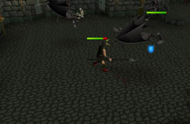

Slayer - The Basics
Introduction

The Slayer skill allows you to kill those strange creatures that you may previously have thought immune to your attacks. Many of these creatures are ancient and greedy, and have amassed a great deal of wealth in their time. You'll find that by training your Slayer skill, you can earn great rewards.
To begin training your Slayer skill, you should approach a Slayer Master.
Six heroes who remember the ancient art of the Slayer still exist within the world of Runescape; these are the Slayer Masters. Located in Burthorpe, Morytania, Edgeville Dungeon, Zanaris, Shilo Village and the Ancient Cavern, each caters to different combat levels.
If you have completed the Smoking Kills quest, you will discover a seventh Slayer Master, who lives in Pollnivneach, deep in the Kharidian Desert.
Slayer Assignments
Your Slayer Master will assign you a certain number of a type of monster to slay. By killing these monsters, you will gain experience in the Slayer skill. Each of the Slayer Masters has a different pool of creatures they will assign to you, each tailored to suit different levels of the skill. A full list of the type of monsters you may be assigned to kill and how many you may be asked to slay can be found in Slayer - Masters.

When you begin slaying you will be given an enchanted gem. You can use this to get in touch with your Slayer Master wherever you are in RuneScape. You can use it to ask the Slayer Master questions regarding your assignment, such as how many more monsters you have left to kill or the best methods to go about slaying these creatures. To do this, just left-click on the enchanted gem in your inventory. This will bring up your Slayer Master so you can ask them questions.
A bracelet of combat will also give occasional Slayer task updates.
If you find that the task you have been assigned is too difficult, you can find an easier alternative by visiting Burthorpe and finding the Burthorpe Slayer Master, Turael. You will not be able to do this if your original task was assigned by Turael.
Once you've completed your assignment, you can get another by returning to a Slayer Master. Only monsters you kill on a members' world will count towards your Slayer task and experience.
Click here to view the Slayer FAQs

More articles in
Slayer (Members Only)
|
|
|
Further Help
Need more help? Come chat with us!
|
|